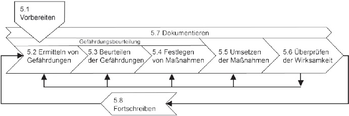
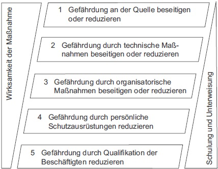

Die Prozessschritte werden in der folgenden Abbildung 1 dargestellt.

Abb. 1: Schematische Darstellung der Prozessschritte der Gefährdungsbeurteilung
(1) Die Gefährdungsbeurteilung ist je nach Art der Tätigkeiten in der Arbeitsstätte durchzuführen. Daher kann es erforderlich sein, eine Gliederung (z. B. in Arbeitsbereiche oder Tätigkeitsgruppen) vorzunehmen.
(2) Wenn von Beschäftigten arbeitsbereichsübergreifende Tätigkeiten (z. B. Hausmeistertätigkeiten, Instandhaltung, Reinigung) ausgeführt werden, ist zu prüfen, ob diese Tätigkeiten gesondert zu betrachten sind.
(3) Bei gleichartigen Arbeitsbedingungen können Arbeitsplätze oder Tätigkeiten innerhalb einer Arbeitsstätte zusammengefasst betrachtet werden.
(4) Erforderlichenfalls sind Tätigkeiten so zu erfassen, dass auch ihre Dauer bzw. Häufigkeit (z. B. temporär, täglich, quartalsweise, jährlich) erkennbar sind.
(5) Es ist zu berücksichtigen, ob in der Arbeitsstätte besondere Personengruppen beschäftigt werden (z. B. Praktikanten, Jugendliche, werdende oder stillende Mütter, Leiharbeitnehmer, Beschäftigte ohne ausreichende Deutschkenntnisse, Menschen mit Behinderungen).
(6) Gefährdungen durch sonstige in der Arbeitsstätte anwesende Personen (z. B. Beschäftigte von Fremdfirmen, Beschäftigte im Rahmen von Dienst- und Werkverträgen, Besucher, Kunden) sind zu berücksichtigen.
(7) In Arbeitsstätten, in denen Beschäftigte mehrerer Arbeitgeber tätig werden, haben sich diese Arbeitgeber bei der Festlegung von Maßnahmen zur Vermeidung gegenseitiger Gefährdungen der Beschäftigten abzustimmen (z. B. auf Baustellen, Bürogemeinschaften).
(8) Für Telearbeitsplätze gilt nur der Anhang Nummer 6 "Maßnahmen zur Gestaltung von Bildschirmarbeitsplätzen" der ArbStättV soweit der Arbeitsplatz von dem im Betrieb abweicht.
(1) Ziel der Ermittlung ist die systematische Identifizierung von möglichen Gefährdungen, deren Quellen und gefahrbringenden Bedingungen.
(2) Das Ermitteln beinhaltet die Erfassung des Planungs- oder Ist-Zustandes (z. B. durch Beobachten, Befragen, Messen, Berechnen oder Abschätzen) sowie die anschließende Benennung und Beschreibung der Gefährdungen.
5.2.1 Vorgehensweise beim Ermitteln von möglichen Gefährdungen
(1) Zur fachkundigen Ermittlung von möglichen Gefährdungen sind systematisch alle unter Punkt 5.1 "Vorbereiten" festgelegten Arbeitsbereiche, Tätigkeitsgruppen, Personengruppen sowie bereichsübergreifende Arbeitsaufgaben bezüglich der Gefährdungsfaktoren gemäß Punkt 5.2.2 und deren Wechselwirkungen (siehe Punkt 4.2) zu betrachten. Bei der Ermittlung von möglichen Gefährdungen (siehe Definition, Punkt 3.2) werden keine bestimmten Anforderungen an das Ausmaß oder die Eintrittswahrscheinlichkeit eines Gesundheitsschadens oder einer gesundheitlichen Beeinträchtigung gestellt.
(2) Sofern es zur fachkundigen Informationsgewinnung erforderlich ist, sind die relevanten Quellen heranzuziehen, z. B.:
(3) Zur Ermittlung der Gefährdung beim Einrichten und Betreiben von Arbeitsstätten können z. B. folgende Methoden einzeln oder kombiniert angewandt werden:
5.2.2 Gefährdungsfaktoren
Beim Ermitteln von möglichen Gefährdungen sind insbesondere die im Anhang mit arbeitsstättenbezogenen Beispielen und Erläuterungen aufgeführten Gefährdungsfaktoren relevant.
Um die Sicherheit und den Gesundheitsschutz der Beschäftigten bei der Arbeit zu gewährleisten und kontinuierlich zu verbessern, hat der Arbeitgeber die ermittelten Gefährdungen systematisch dahingehend zu beurteilen, ob Maßnahmen des Arbeitsschutzes erforderlich sind. Für das Beurteilen der Gefährdung im Hinblick auf das zu erreichende Schutzziel nach ArbStättV sind zunächst Beurteilungsmaßstäbe erforderlich, die in der Regel aus dem einschlägigen Vorschriften- und Regelwerk sowie aus der Fachliteratur abzuleiten sind (siehe Punkt 5.3.1 Absätze 1 bis 3).
Fehlen solche Beurteilungsmaßstäbe müssen diese betrieblich vereinbart werden (siehe Punkt 5.3.1 Absatz 4).
Anhand dieser Beurteilungsmaßstäbe erfolgt danach das Beurteilen der Gefährdungen (siehe Punkt 5.3.2).
5.3.1 Ermittlung von Beurteilungsmaßstäben
Bei der Ermittlung bzw. Festlegung dieser Maßstäbe ist in folgender Reihenfolge vorzugehen:
5.3.2 Durchführung der Beurteilung
Der vorliegende Planungs- oder Ist-Zustand mit den ermittelten Gefährdungen wird anhand des gemäß Punkt 5.3.1 herangezogenen Beurteilungsmaßstabs beurteilt.
Beim Beurteilen der Gefährdungen sind insbesondere einzubeziehen:
5.3.3 Ergebnis der Beurteilung der Gefährdungen
(1) Folgende Beurteilungsergebnisse sind möglich:
(2) Eine Verbesserung von Sicherheit und Gesundheitsschutz ist anzustreben (vgl. ArbSchG), z. B. Installation einer Strahlungsheizung statt Konvektionsheizung in Werkstätten, Verbesserung der Bürogestaltung.
5.4.1 Allgemeine Grundsätze für die Festlegung von Maßnahmen
(1) Die beim Beurteilen der Gefährdungen gewonnenen Erkenntnisse bilden die Basis für das Festlegen der erforderlichen Maßnahmen des Arbeitsschutzes.
(2) Die Maßnahmen müssen dem Stand der Technik, Arbeitsmedizin und Hygiene sowie den Anforderungen der Ergonomie entsprechen und insbesondere sind die vom Bundesministerium für Arbeit und Soziales nach § 7 Absatz 4 ArbStättV bekannt gemachten Regeln und Erkenntnisse zu berücksichtigen. Gesicherte arbeitswissenschaftliche Erkenntnisse sind zu berücksichtigen. Die Maßnahmen müssen geeignet sein, die ermittelten Gefährdungen zu beseitigen bzw. soweit zu reduzieren, dass das Schutzziel erreicht wird.
(3) Werden die in den Technischen Regeln für Arbeitsstätten genannten Maßnahmen eingehalten, so ist davon auszugehen, dass die Schutzziele der ArbStättV erreicht werden. Es gilt die Vermutungswirkung.
(4) Weicht der Arbeitgeber von den in den Technischen Regeln genannten Maßnahmen ab oder fehlen diese, muss er durch andere Maßnahmen die gleiche Sicherheit und den gleichen Schutz der Gesundheit der Beschäftigten erreichen. Dies ist nach Punkt 5.7 zu dokumentieren.
(5) Die Unterweisung der Mitarbeiter hinsichtlich der möglicherweise verbleibenden Gefährdungen sowie ggf. der Auswirkung der festgelegten Maßnahme bzw. deren Umsetzung ist integraler Bestandteil der jeweiligen Maßnahme.
(6) Beim Festlegen von Maßnahmen sind die Zusammenhänge bzw. die Wechselwirkungen aus den resultierenden Gefährdungsfaktoren von Arbeitsstätte, Arbeitsplatz, Arbeitsmitteln, Arbeitsstoffen, Arbeitsorganisation und Arbeitsaufgabe zu berücksichtigen.
(7) Sollten sich bedingt durch Maßnahmen zur Beseitigung bzw. Reduzierung von Gefährdungen neue Gefährdungen für die Beschäftigten ergeben, sind auch diese in die Gefährdungsbeurteilung einzubeziehen (z. B. bei vorgesehener Installation einer Absauganlage die Beurteilung der neuen Geräuschquelle).
5.4.2 Maßnahmenhierarchie
(1) Bei der Auswahl der Maßnahmen hat der Arbeitgeber den im ArbSchG festgelegten Grundsatz der Vermeidung von Gefährdungen zu prüfen und wenn möglich umzusetzen (z. B. belastende Wärmequelle aus Arbeitsbereich entfernen).
(2) Soweit die Vermeidung von Gefährdungen gemäß Absatz 1 nicht möglich ist, muss beim Festlegen von Maßnahmen die folgende Maßnahmenhierarchie berücksichtigt werden (siehe Abb. 2).

Abb. 2: Maßnahmenhierarchie
(3) Zur Erreichung des Schutzziels kann es erforderlich sein, Maßnahmen zu kombinieren. Dabei sind die Hierarchiestufen zu beachten.
(4) Im Einzelfall können Maßnahmen aus einer niedrigeren Hierarchiestufe eine gleichwertige Schutzwirkung erreichen (z. B. regelmäßige Unterbrechung der Tätigkeiten in durch Sommerhitze belasteten Räumen anstatt Klimatisierung).
(1) Die festgelegten Maßnahmen sind entsprechend Punkt 5.3.3 zu priorisieren und umzusetzen.
(2) Wurde eine Entscheidung für eine Maßnahme getroffen, sind die hieraus resultierenden Umsetzungsschritte zu konkretisieren.
(1) Die Umsetzung und Wirksamkeit der festgelegten Maßnahmen sind zu überprüfen. Dabei ist festzustellen, ob die Maßnahmen vollständig umgesetzt wurden und dazu geführt haben, die Gefährdungen zu beseitigen bzw. hinreichend zu reduzieren, und ob gegebenenfalls neue Gefährdungen entstanden sind. Die Prüfung kann z. B. durch Beobachten, Messen oder Befragen (siehe Punkt 5.2) erfolgen.
(2) Sollten weitere oder andere Maßnahmen erforderlich sein, weil z. B. trotz der Umsetzung der festgelegten Maßnahmen Schutzziele nicht erreicht werden, dann sind die vorherigen Teilschritte entsprechend Abbildung 1 (siehe Punkt 5) zu wiederholen.
5.7.1 Grundsätze der Dokumentation
(1) Die Dokumentation gemäß § 3 Absatz 3 ArbStättV ist Bestandteil der Unterlagen nach § 6 ArbSchG. Sie muss vor Aufnahme der Tätigkeiten vorliegen.
(2) Die Dokumentation dient mit als Grundlage für die Planung und Gestaltung der betrieblichen Prozesse, z. B. für Neu- und Umbauten, Unterweisungen, Betriebsanweisungen. Sie erleichtert es, Verantwortliche und Termine in Hinblick auf Maßnahmen des Arbeitsschutzes nachvollziehbar festzuhalten.
(3) Sie ist die Basis für die Arbeit der betrieblichen Akteure im Arbeitsschutz (insbesondere Arbeitgeber, verantwortliche Personen nach § 13 ArbSchG (z. B. Führungskräfte), Betriebs- und Personalräte, Fachkräfte für Arbeitssicherheit, Betriebsärzte und Sicherheitsbeauftragte) sowie des Arbeitsschutzausschusses.
(4) Die Dokumentation erfolgt schriftlich und kann als Papierdokument oder in elektronischer Form vorliegen. Sie muss in einer verbindlichen Version verfügbar sein.
(5) Werden Hilfen zur Dokumentation der Gefährdungsbeurteilung, z. B. der Unfallversicherungsträger, verwendet, sind sie an die betrieblichen Bedingungen anzupassen. Insbesondere ist sicherzustellen, dass alle Betriebsteile und Tätigkeiten (ggf. auch unterschiedliche Betriebszustände, z. B. Instandhaltung) erfasst werden.
(6) Der Umfang der Dokumentation richtet sich z. B. nach der Betriebsgröße, Betriebsstruktur oder Art und Ausmaß der Gefährdungen. Insbesondere
5.7.2 Mindestanforderungen
(1) Die Dokumentation muss mindestens Folgendes enthalten:
(2) Aus den im Rahmen der Gefährdungsbeurteilung erstellten bzw. aus den mitgeltenden Unterlagen (z. B. Organigramme, Dienstverteilungspläne, Pflichtenübertragung) müssen die für die Durchführung der Gefährdungsbeurteilung und die Wirksamkeitskontrolle Verantwortlichen sowie das Datum der Erstellung bzw. der Aktualisierung hervorgehen.
5.7.3 Weitere Unterlagen
Um die erforderliche Plausibilität und Aussagefähigkeit der Dokumentation zu erreichen, kann es erforderlich sein, weitere, im Verlaufe der Gefährdungsbeurteilung verwendete oder erstellte Unterlagen der Dokumentation beizufügen oder auf diese Unterlagen zu verweisen. Solche Unterlagen können z. B. sein:
Die Gefährdungsbeurteilung ist kontinuierlich zu überprüfen und zu aktualisieren. Dazu sind insbesondere die in Punkt 4 Absatz 4 aufgeführten Grundsätze und Anlässe zu berücksichtigen.